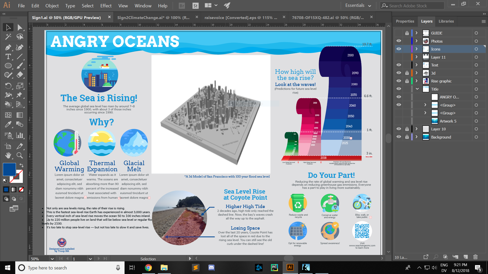
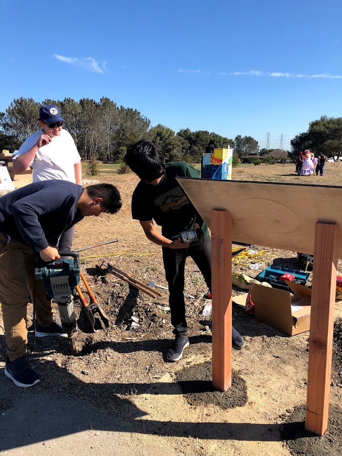
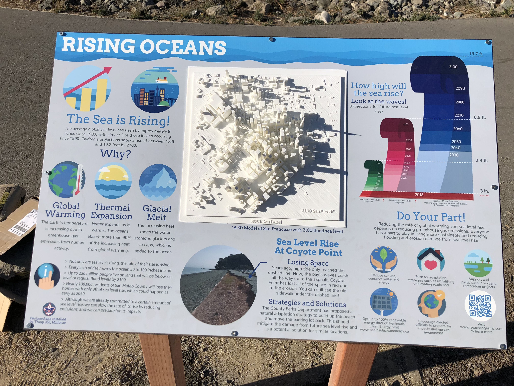
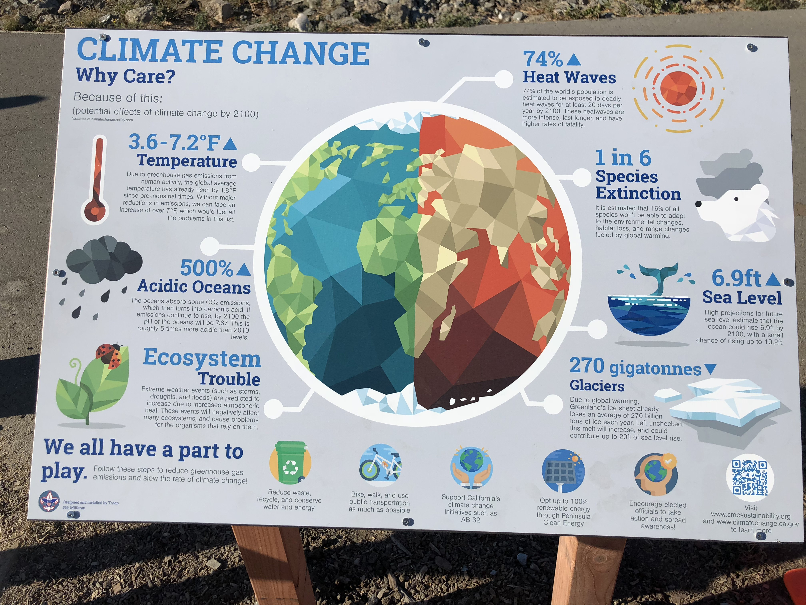

Sea Level Rise Signs
For my Eagle Scout project, I designed and installed two infographic signs on climate change at a local beachfront park (Coyote Point). This park had lost part of its parking lot due to the rising tide of the San Francisco Bay. As a part of their multi-million dollar restoration project, we installed these signs on a high traffic location overlooking the old parking lot and the bay.
I designed the signs in Adobe Illustrator. It took a while to learn how to use the program, but once I got the hang of it everything went pretty smoothly (until the install day). After some revisions of the wording and information on the signs from the San Mateo County Office of Sustainability, we were ready to print and install the signs.
I wanted to add a touch of my passion for tech to the project, so I designed and installed a scale model of San Francisco with a simulated "worst case" sea level rise in 2100 as part of the signs (unfortunately that worst case is looking better and better...). It took a while and a few revisions to get a printable model, since I designed the original model in SketchUp using the demo of the Placemaker extension, which imports building data directly from Google Earth and places them into SketchUp. At first, the model had a lot of structural issues and missing edges since the extension wasn't designed for making 3D printable models. Luckily, I found an online service that fixed the glaring issues with the file, resulting in a printable model. It's pretty cool since you can see the same San Francisco skyline depicted in the 3D model across from where we installed the signs on a clear day.
Process
Design
 It took about a month of work to design the signs. I had multiple drafts of the design, but in the end I took a lot of inspiration from various climate change infographics I saw online. Flaticon was a lifesaver during this process, and allowed me to include nice flat icons that made the signs stand out much more (without me needing to actually design the individual icons).
This project was partly a collaboration with the San Mateo County Office of Sustainability (or at least it started that way...), so after drafting the initial design and information, I sent it to them for review. After a couple revisions of the information (mostly to avoid using "crisis language," which honestly makes a lot of sense) I sent the signs to the Coyote Point rangers who printed them on a sheet of sheet metal. About a week later, we were ready to install.
Installation
 I recruited a couple of friends to help with the installation. We ran into 2 minor problems come installation day.
First, the wooden posts I bought were two feet short. We went quickly to home depot to buy longer posts, but they sold us ones that were too short again lol. As a quick hack we cut off two feet from the posts we bought that day and bolted them to the old posts to increase the length.
Second, while we were digging the holes to mount the posts in, we hit an old pipe that supposedly wasn't in use since the 60s. Unfortunately there was still water in the pipe which filled up the hole and forced us to move the location of that sign.
After we fixed these issues, we managed to install the signs and they looked great! High-res photos of each sign below. 